CRVI000140Jutaro Itoh - 企業空間のサイン — Corporate Signs (Designing Signs Vol. 2)
Jutaro Itoh and Atsuko Taguchi · Rikuyo-sha
Jutaro Itoh and Atsuko Taguchi · Rikuyo-sha

CRVI002658Seiichi Hayashi - Untitled (woman in a yellow shirt with swallows)

CRVI000108Masuteru Aoba - A.D. 3000 ⋯ Energy-Addicted Man?
エネルギーに頼り過ぎた3000年の人間？
エネルギーに頼り過ぎた3000年の人間？

CRVI000109Katsumi Asaba - Bauhaus.
Misawa Design, bauhaus collection · after Lyonel Feininger's woodcut 'Cathedral', 1919 · 2009
Misawa Design, bauhaus collection · after Lyonel Feininger's woodcut 'Cathedral', 1919 · 2009

CRVI002657Seiichi Hayashi - Untitled (woman with a lamp and bottles)

CRVI001956Takashi Murakami - Army of Mushrooms
2003
2003
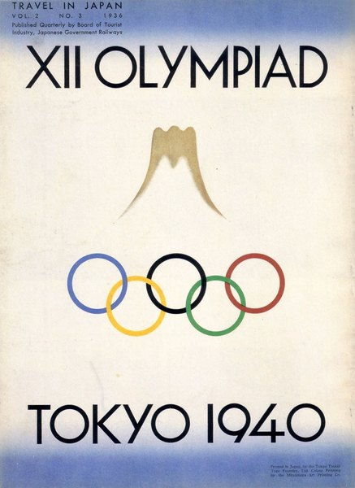
CRVI002703Hiromu Hara - XII Olympiad Tokyo 1940
1936
1936
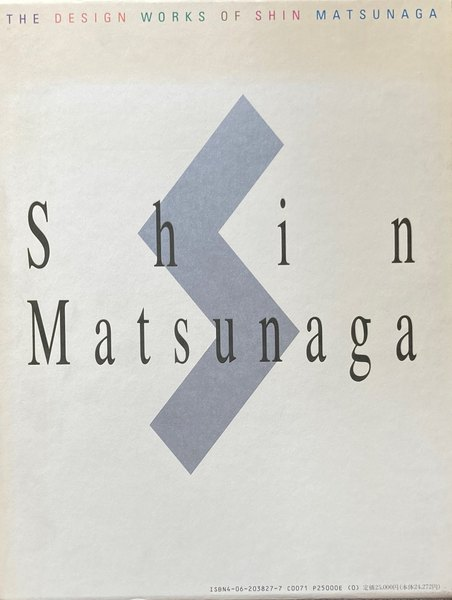
CRVI002712Shin Matsunaga - The Design Works of Shin Matsunaga
1994
1994

CRVI000305Yellow Magic Orchestra - BGM
Designer unknown · Alfa · 1981
Designer unknown · Alfa · 1981
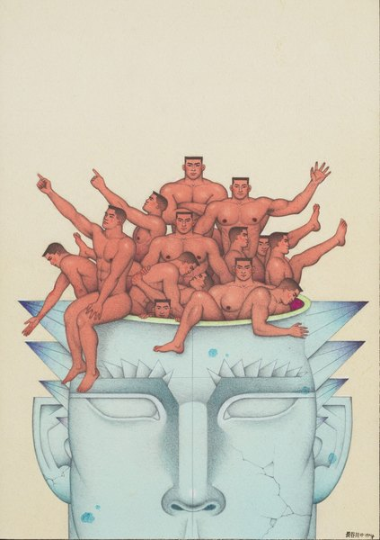
CRVI003062Sadao Hasegawa - untitled

CRVI002667Yusaku Kamekura - 衆議院議員選挙 (House of Representatives election)
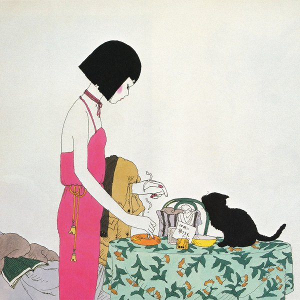
CRVI002655Seiichi Hayashi - 10時に帰ります (I Will Return at 10 O'Clock)
1982
1982

CRVI002956Ikko Tanaka - Ikko Tanaka — Design no Crossroad
1987
1987

CRVI001051Takenobu Igarashi - Cover for Graphis 245
Magazine cover
Magazine cover

CRVI001847Tadasky - G-101
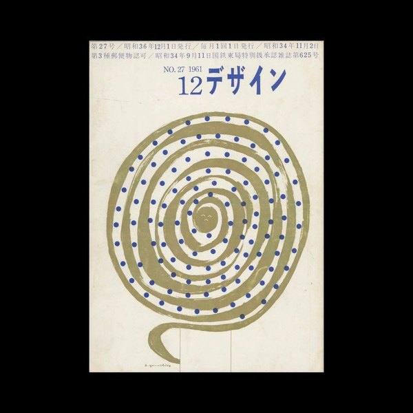
CRVI002697Ryuichi Yamashiro - デザイン No. 27 (Design, No. 27)
1961
1961
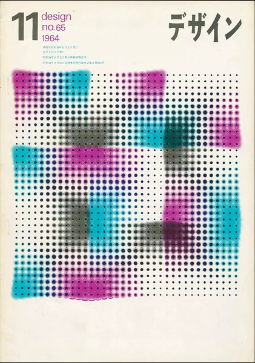
CRVI002701Kohei Sugiura - デザイン No. 65 (Design, No. 65)
1964
1964

CRVI001955Takashi Murakami - Stew Blue

CRVI000181Shigeo Fukuda - Look 1
Exhibition · 103 x 73 cm offset · 1985
Exhibition · 103 x 73 cm offset · 1985

CRVI000122Shigeo Fukuda - [Poster: figure walking through a red spiral, LOOK series]
Title not established
Title not established

CRVI001789Michio Yoshihara - Untitled

CRVI000105Masuteru Aoba - 10th Anniversary of "Tategumi Yokogumi" Magazine
Morisawa & Company Ltd. · Silkscreen · 1993
Morisawa & Company Ltd. · Silkscreen · 1993
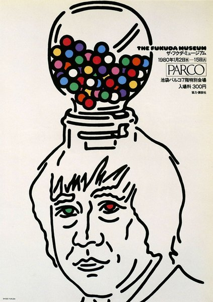
CRVI002685Shigeo Fukuda - The Fukuda Museum
1980
1980

CRVI002682Kazumasa Nagai - Japanische Plakate – heute
2006
2006

CRVI001054Takenobu Igarashi - Poster for the 15th Summer Jazz Festival
Poster · 1983
Poster · 1983
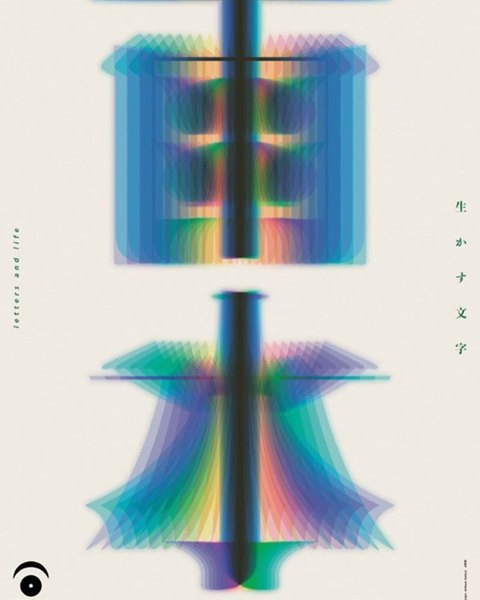
CRVI002708Mitsuo Katsui - 生かす文字 (Letters and Life)

CRVI000158Kazumasa Nagai - Human Right - Living Together - Artis '89
Designed by Kazumasa Nagai · 1988
Designed by Kazumasa Nagai · 1988
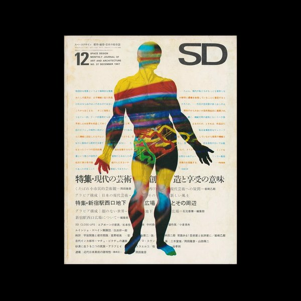
CRVI002700Kohei Sugiura - SD Space Design No. 37
1967
1967
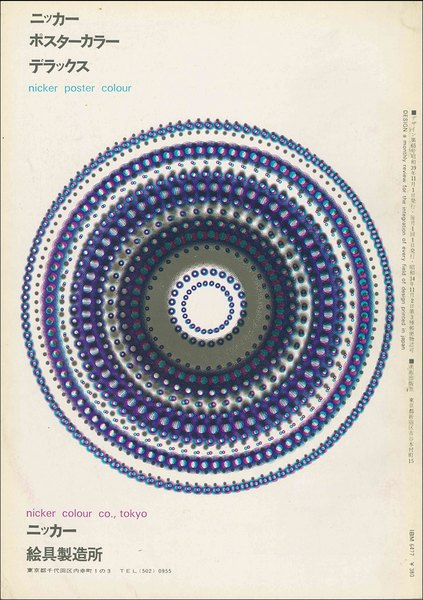
CRVI002698Unattributed - ニッカー ポスターカラー デラックス (Nicker Poster Colour Deluxe)
1964
1964
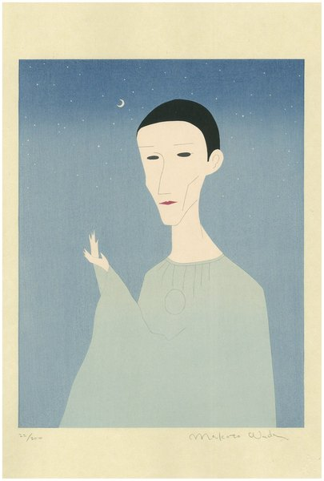
CRVI002704Makoto Wada - Boulevard of Crime: Jean-Louis Barrault
1979
1979
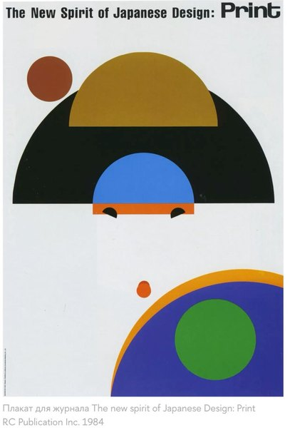
CRVI002671Ikko Tanaka - The New Spirit of Japanese Design: Print
1984
1984
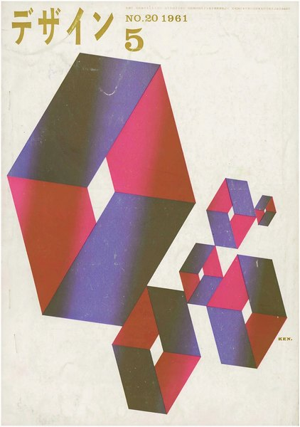
CRVI002692Kenji Itoh - デザイン No. 20 (Design, No. 20)
1961
1961

CRVI002651Lee Ufan - From Line

CRVI002177Yasumasa Morimura - Self-portrait as Marilyn
1995
1995
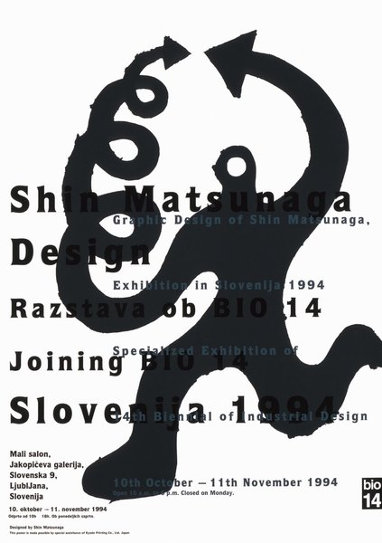
CRVI002713Shin Matsunaga - Shin Matsunaga Design: Razstava ob BIO 14
1994
1994

CRVI000141Shin Matsunaga - Shiseido Sun Oil
Offset lithograph · 1971
Offset lithograph · 1971
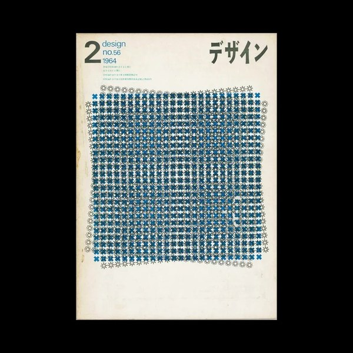
CRVI002699Kohei Sugiura - デザイン No. 56 (Design, No. 56)
1964
1964

CRVI000156Kazumasa Nagai - Design Forum - Matsuya Ginza
Designed by Kazumasa Nagai · 1981
Designed by Kazumasa Nagai · 1981
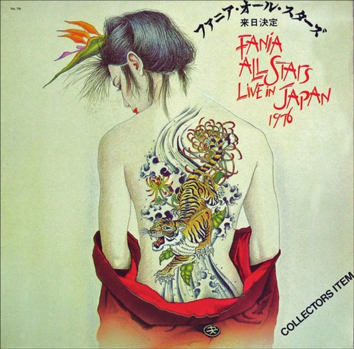
CRVI002399Fania All-Stars - Fania All Stars Live in Japan 1976
1976
1976

CRVI000142Shin Matsunaga - [Poster: PLAY, black discs and an orange form]
Title not established
Title not established
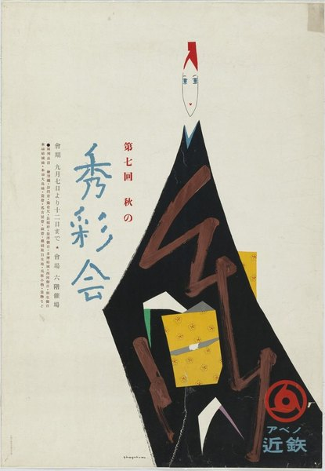
CRVI002687Yoshio Hayakawa - 第七回 秋の秀彩会 (7th Autumn Shusaikai)
1952
1952
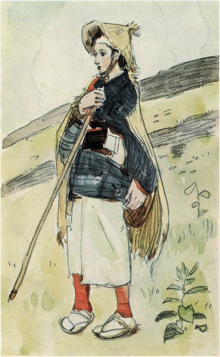
CRVI002755Takehisa Yumeji - Climbing Mt Fuji
1909
1909

CRVI000106Natori Shunsen - Matsumoto Koshiro as the white bearded Ikkyu
from the supplement to the Collection of Shunsen portraits (Shunsen nigao-e shu) series · color woodblock · 1929
from the supplement to the Collection of Shunsen portraits (Shunsen nigao-e shu) series · color woodblock · 1929

CRVI000127Koichi Sato - Sakurahime Azuma Bunsho
桜姫東文章 · Shinjuku Kinokuniya Hall · 1976 Tomin Arts Festival · 1976
桜姫東文章 · Shinjuku Kinokuniya Hall · 1976 Tomin Arts Festival · 1976

CRVI000130Koichi Sato - New Music Media, New Magic Media
1974
1974

CRVI000756Tetsuya Ishida - Public Property
Kōkyōbutsu · acrylic on canvas · 1999
Kōkyōbutsu · acrylic on canvas · 1999

CRVI000217Yayoi Kusama - Infinity Mirror Room — Phalli's Field (or Floor Show)
Kusama standing in the work · via David Zwirner · 1965
Kusama standing in the work · via David Zwirner · 1965
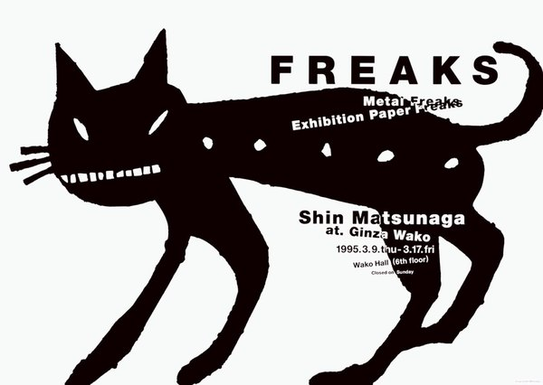
CRVI002714Shin Matsunaga - Freaks
1995
1995

CRVI002012Kohei Nawa - PixCell-Deer

CRVI002673Ikko Tanaka - The New Spirit of Japanese Design: Print (second colour rendition)
1984
1984
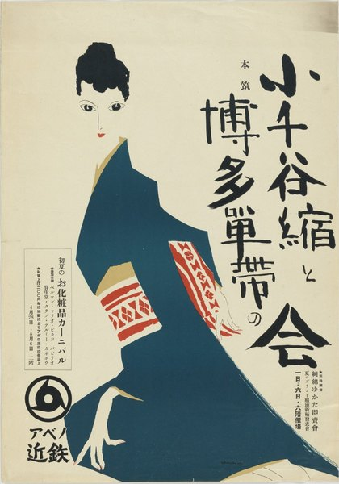
CRVI002688Yoshio Hayakawa - 小千谷縮と博多単帯の会 (Ojiya-chijimi and Hakata Hitoe-obi)
1951
1951

CRVI000107Masuteru Aoba - The Bread Is For Peace
戦争に使うパンはない · anti-war poster · carries an Arthur Koestler passage in twelve languages · c1975
戦争に使うパンはない · anti-war poster · carries an Arthur Koestler passage in twelve languages · c1975
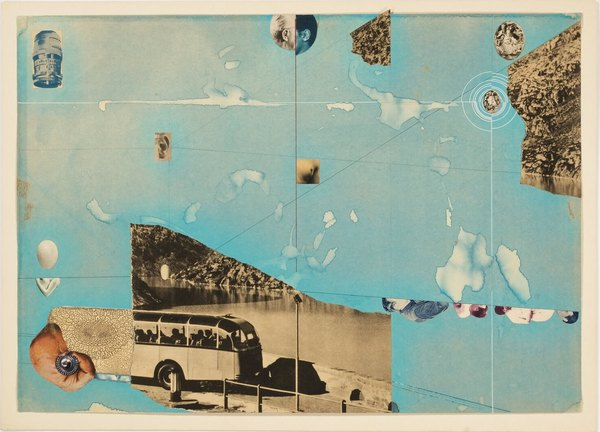
CRVI002652Genpei Akasegawa - Untitled (collage with a bus and a shoreline)

CRVI002669Ikko Tanaka - サンケイ観世能 (Sankei Kanze Noh)

CRVI002653Unattributed - 漫画宝島 No. 6: BEST DANGEROUS

CRVI002649Kiyoshi Awazu - おさい権三 (Osai and Gonza)
1973
1973

CRVI002955Kiyoshi Awazu - Muhōmatsu no Isshō / Tomishima Matsugorō Den
1969
1969

CRVI002679Kazumasa Nagai - 日本のデザイン展望 (Exhibition Designs Today)
1960
1960

CRVI000121Tadanori Yokoo - Word & Image
The Museum of Modern Art, New York, January 24 – March 10 · 1968
The Museum of Modern Art, New York, January 24 – March 10 · 1968

CRVI000116Tadanori Yokoo - Made in Japan, Tadanori Yokoo, Having Reached a Climax at the Age of 29, I Was Dead
Self-portrait poster · 1965
Self-portrait poster · 1965

CRVI001777Unidentified - Red impasto composition

CRVI000137Shigeo Fukuda - [Poster: ring of figures on dark red]
Title not established
Title not established

CRVI000136Shigeo Fukuda - [Poster: figure walking off a curling sheet of paper]
Title not established
Title not established

CRVI000149Shigeo Fukuda - The Marriage of Figaro - Teatr Narodowy Warsaw
Designed by Shigeo Fukuda
Designed by Shigeo Fukuda

CRVI001951Yayoi Kusama - No. I.Z
1960
1960

CRVI001851Tadasky - E-137A

CRVI000138Shigeo Fukuda - [Poster: red arches with figures]
Title not established
Title not established

CRVI002668Ikko Tanaka - Untitled (face in concentric arcs)

CRVI002496Kiyoshi Awazu - Red and orange arcs on a dark ground

CRVI002711Shin Matsunaga - Rights of Humankind
1989
1989

CRVI001056Takenobu Igarashi - Cover for IDEA No. 130
Magazine cover · Seibundo Shinkosha, Tokyo · 1975
Magazine cover · Seibundo Shinkosha, Tokyo · 1975

CRVI002684Shigeo Fukuda - Happy Earthday
1982
1982

CRVI001952Unidentified - Yayoi Kusama before an Infinity Net

CRVI001775Jirō Yoshihara - Circle

CRVI001039Kiyoshi Awazu - Untitled poster
AGI (Alliance Graphique Internationale) member archive
AGI (Alliance Graphique Internationale) member archive

CRVI002491Kiyoshi Awazu - 花の館 (Hana no Yakata), Bungakuza

CRVI000132Tadanori Yokoo - The 5th International Biennial Exhibition of Prints in Tokyo
The National Museum of Modern Art, Tokyo · 11.2–12.15 · 1966
The National Museum of Modern Art, Tokyo · 11.2–12.15 · 1966

CRVI001787Unidentified - Red chevron composition

CRVI001045Kiyoshi Awazu - Untitled poster

CRVI002670Unattributed - 世界のポスター展 (World Poster Exhibition)
1982
1982

CRVI002716Eiko Ishioka - 西洋は東洋を着こなせるか (Can West Wear East?)
1979
1979

CRVI002663Koichi Enomoto - 光 / LIGHT

CRVI002664Yusaku Kamekura - 富士フォトコンテスト 1955 (Fuji Photo Contest)
1955
1955

CRVI001780Atsuko Tanaka - Electric Dress
1956
1956

CRVI002953Mitsuo Katsui - poster

CRVI001042Kiyoshi Awazu - Poster Nippon
Screenprint · LACMA, Marc Treib Collection · 1972
Screenprint · LACMA, Marc Treib Collection · 1972

CRVI002661Unattributed - 帝都物語 (Tokyo: The Last Megalopolis)
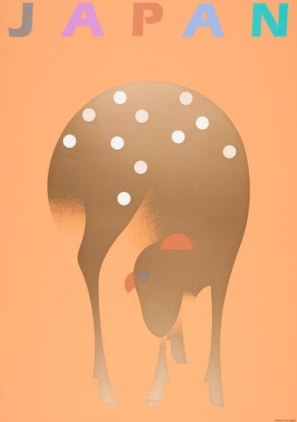
CRVI002949Ikko Tanaka - Japan
1980
1980

CRVI000139Jutaro Itoh - Hiroshima (orange)
廣島
廣島

CRVI000319Cornelius - Fantasma
Designer unknown · Trattoria · 1997
Designer unknown · Trattoria · 1997

CRVI002695Ryuichi Yamashiro - 西武のクリスマスギフト (Seibu Christmas Gift)

CRVI001785Akira Kanayama - Work
1952
1952
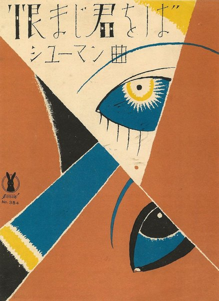
CRVI002756Takehisa Yumeji - 恨まじ君をば (Ich grolle nicht), Senow Score No. 384
1924
1924

CRVI000131Shigeo Fukuda - [Poster: paperclip with legs]
Title not established
Title not established

CRVI002662Henrikus Morisaki - 天井棧敷 海外公演版 (Tenjō Sajiki, overseas performance edition)
1971
1971

CRVI002178Yasumasa Morimura - Self-portrait after Frida Kahlo

CRVI000135Shigeo Fukuda - UCC Coffee
Advertising
Advertising

CRVI000111Kiyoshi Awazu - Contemporary Japanese Sculpture Exhibition — Form and Color
現代日本彫刻展 形と色 · 1973
現代日本彫刻展 形と色 · 1973

CRVI001104Utagawa Yoshifusa - Two Samurai, from Twenty-four Famous Generals of Kai
Woodblock print (nishiki-e) · Kai Nijuyon-sho no Uchi · 1843–1845
Woodblock print (nishiki-e) · Kai Nijuyon-sho no Uchi · 1843–1845

CRVI001055Takenobu Igarashi - Alphabet
Published by the Takenobu Igarashi Archive
Published by the Takenobu Igarashi Archive

CRVI002489Kiyoshi Awazu - 飢餓海峡 (Kiga Kaikyō / Starving Strait), Bungakuza
1977
1977
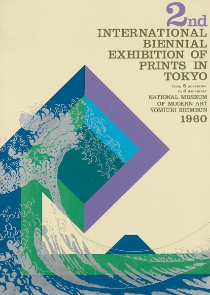
CRVI002696Ryuichi Yamashiro - 2nd International Biennial Exhibition of Prints in Tokyo
1960
1960

CRVI001783Shōzō Shimamoto - Untitled

CRVI001044Kiyoshi Awazu - mano-dharma concert — Takehisa Kosugi
Poster
Poster

CRVI000426ザ・タイガース - 世界はボクらを待っている
Designer unknown · ポリドール · 1968
Designer unknown · ポリドール · 1968

CRVI000110Kiyoshi Awazu - The 6th Contemporary Japanese Sculpture Exhibition
第6回現代日本彫刻展 · Ube City Open-Air Sculpture Museum, Tokiwa Park, Ube, Yamaguchi · 1975
第6回現代日本彫刻展 · Ube City Open-Air Sculpture Museum, Tokiwa Park, Ube, Yamaguchi · 1975

CRVI002494Kiyoshi Awazu - art now 現代の美術 (Gendai no Bijutsu), Kodansha

CRVI000117Tadanori Yokoo - Are You Ready for Foods?
Advertisement for a Chinese restaurant · 1989
Advertisement for a Chinese restaurant · 1989

CRVI002495Kiyoshi Awazu - 季刊フィルム No.8 (Kikan Film No. 8)

CRVI001786Tsuruko Yamazaki - Untitled
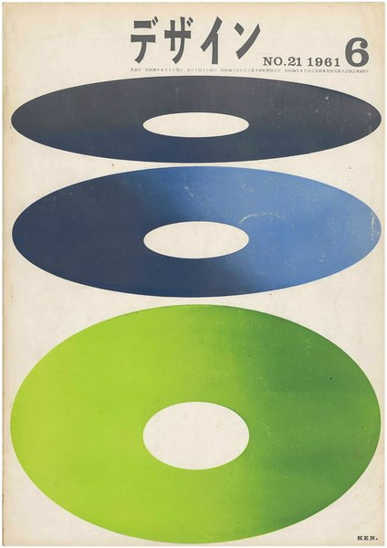
CRVI002691Kenji Itoh - デザイン No. 21 (Design, No. 21)
1961
1961
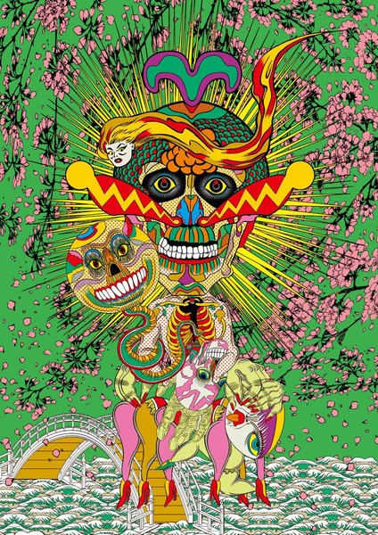
CRVI002965Keiichi Tanaami - untitled

CRVI001784Sadamasa Motonaga - Untitled
1993
1993

CRVI002966Keiichi Tanaami - untitled
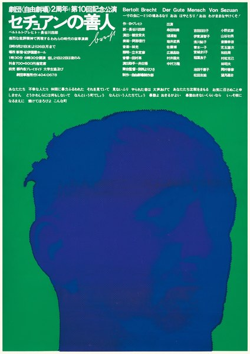
CRVI002660Unattributed - セチュアンの善人 (The Good Person of Szechwan)
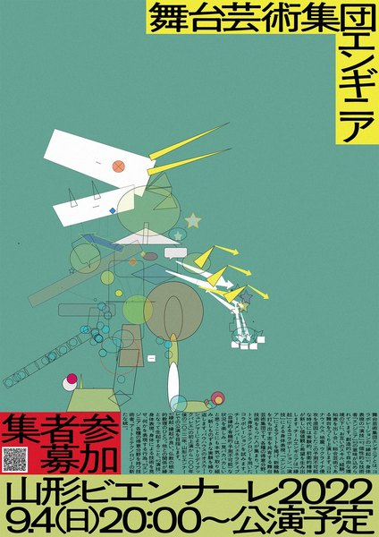
CRVI002694Kenji Aihara - 山形ビエンナーレ2022: 舞台芸術集団エンギア
2022
2022
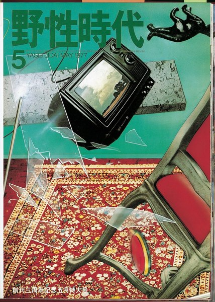
CRVI002715Eiko Ishioka - 野性時代 (Yasei Jidai), May 1977
1977
1977

CRVI002967Keiichi Tanaami - untitled

CRVI001049Takenobu Igarashi - EXPO '85 — The International Exposition, Tsukuba, Japan
Poster · The Museum of Modern Art, New York · 1985
Poster · The Museum of Modern Art, New York · 1985

CRVI000129Koichi Sato - Soap Bubbles Floated, They Floated Into Outer Space
Produced by Human Design · Fuji Television
Produced by Human Design · Fuji Television

CRVI001432Hirohito Fukutomi - ECM Special IV: New Music in Trumpet & Saxophone
Album cover · ECM PA-9603 · 1977
Album cover · ECM PA-9603 · 1977

CRVI002498Koichi Sato - グラフィックデザイナー 佐藤晃一展 (Graphic Designer Koichi Sato)
2017
2017
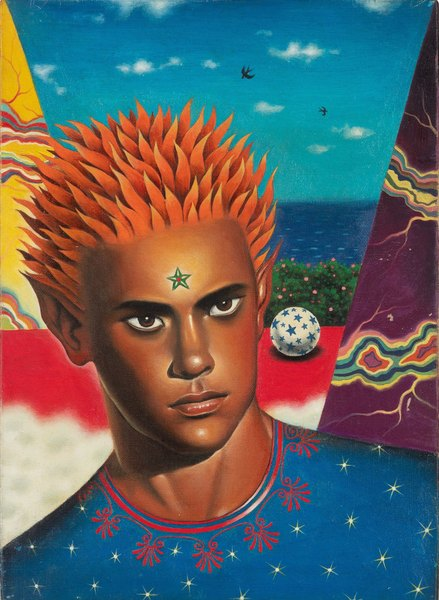
CRVI003034Sadao Hasegawa - Untitled
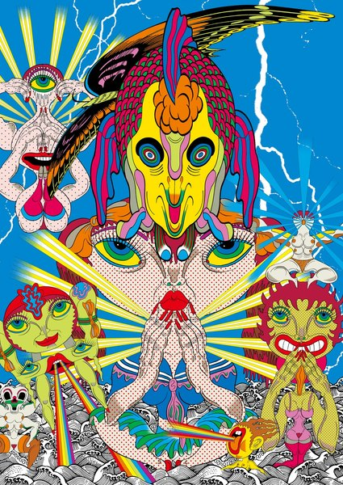
CRVI002968Keiichi Tanaami - untitled
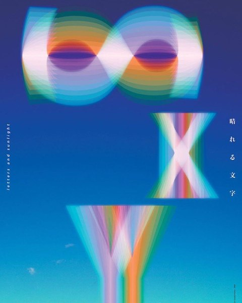
CRVI002707Mitsuo Katsui - 晴れる文字 (Letters and Sunlight)

CRVI000133Tadanori Yokoo - JUN ROPÉ
Fashion advertising
Fashion advertising
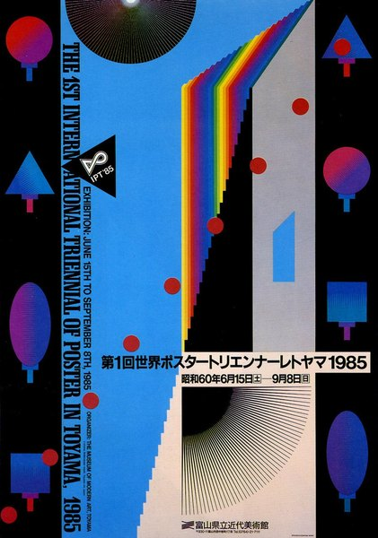
CRVI002681Kazumasa Nagai - The 1st International Triennial of Poster in Toyama
1985
1985
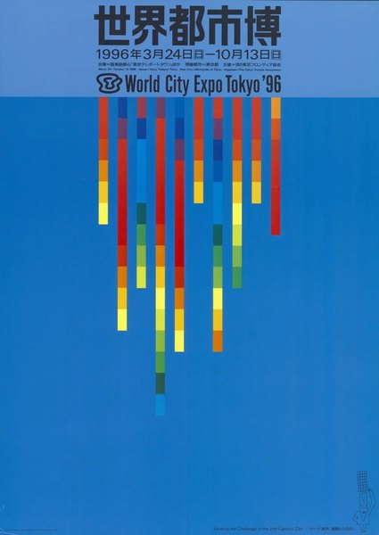
CRVI002812Rosmarie Tissi - World City Expo Tokyo '96
1994
1994

CRVI002969Keiichi Tanaami - untitled
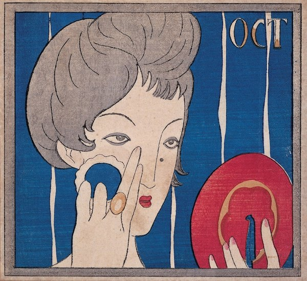
CRVI002757Takehisa Yumeji - 化粧の秋 (Kesho no Aki, Makeup in Autumn)
1924
1924
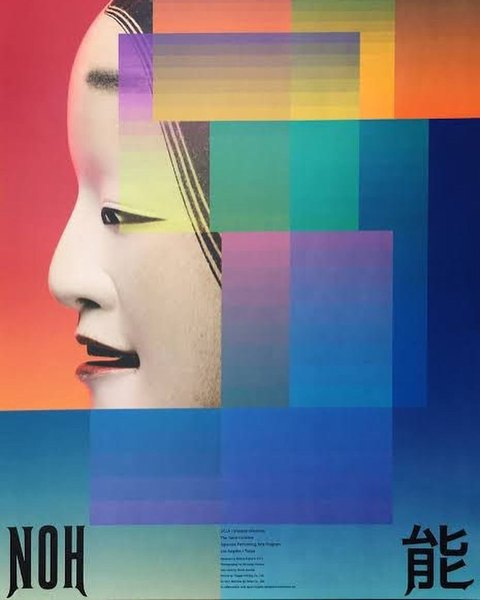
CRVI002952Mitsuo Katsui - NOH 能
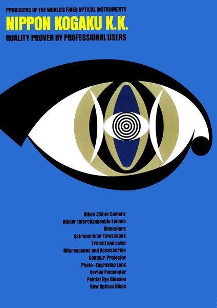
CRVI002957Yusaku Kamekura - Nippon Kogaku K.K.
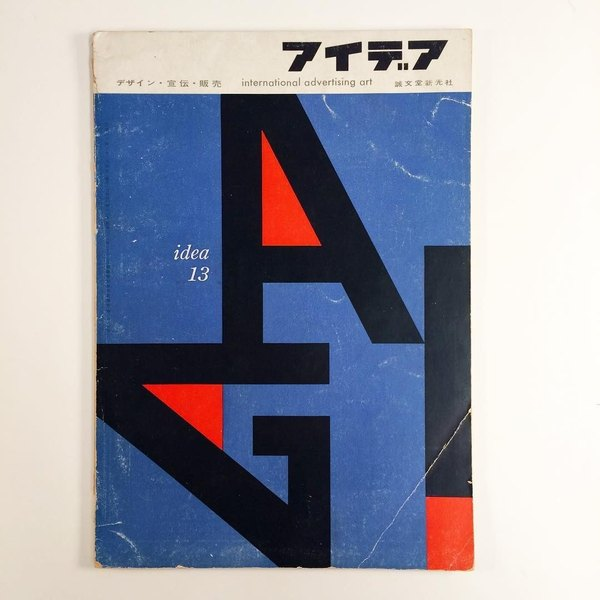
CRVI002702Hiromu Hara - アイデア / idea No. 13
1955
1955
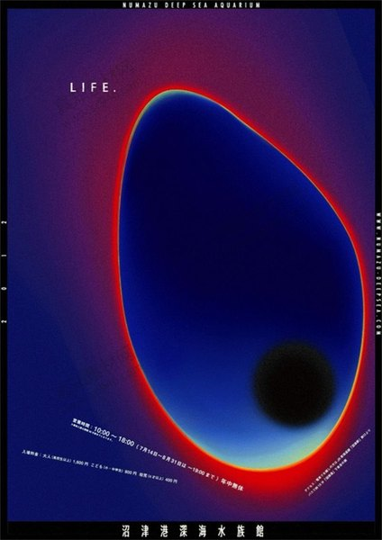
CRVI002499Unattributed - LIFE. — Numazu Port Deep Sea Aquarium

CRVI002720Takenobu Igarashi - AIGA Detroit presents Takenobu Igarashi and his Architectural Alphabet

CRVI000119Tadanori Yokoo - Koshimaki-Osen
腰巻お仙 · theatre poster for Kara Juro's Jokyo Gekijo (Situation Theatre) · silkscreen · 1966
腰巻お仙 · theatre poster for Kara Juro's Jokyo Gekijo (Situation Theatre) · silkscreen · 1966

CRVI002672Unattributed - DNPグラフィックデザイン・アーカイブ収蔵品展 IV: 田中一光ポスター 1980–2002
2012
2012

CRVI002393Bruce Nauman - One Hundred Live and Die
1984
1984

CRVI002706Mitsuo Katsui - Untitled (spectrum rays)

CRVI002954Kiyoshi Awazu - Chi no Mure (地の群れ)
1970
1970

CRVI002666Yusaku Kamekura - アイデア / idea No. 81
1967
1967

CRVI002654Koga Hirano - Czech Avant-Garde Book Design 1920's-30s
1996
1996

CRVI002493Kiyoshi Awazu - おさい ノ 権三 (Osai no Gonza), Bungakuza

CRVI000124Ikko Tanaka - Nihon Buyo
UCLA Asian Performing Arts Institute · Los Angeles, Washington D.C., New York · 1981
UCLA Asian Performing Arts Institute · Los Angeles, Washington D.C., New York · 1981

CRVI002950Shigeo Fukuda - Shikaku Sakasu '85 (Vision Circus '85)
1985
1985

CRVI002665Yusaku Kamekura - グラフィック '55 (Graphic '55)
1955
1955

CRVI002656Seiichi Hayashi - かちかち山 (Kachi-kachi Yama)

CRVI002951Tadanori Yokoo - Tadanori Yokoo

CRVI001782Shōzō Shimamoto - Untitled
1957
1957

CRVI000118Tadanori Yokoo - Garuda
Offset lithograph · 1990
Offset lithograph · 1990

CRVI003033Sadao Hasegawa - Untitled
1981
1981

CRVI002718Eiko Ishioka - Untitled (Empire State Building textile)
1971
1971

CRVI001040Kiyoshi Awazu - Noh Performance at UCLA
Poster · The Museum of Modern Art, New York · 1981
Poster · The Museum of Modern Art, New York · 1981

CRVI001041Kiyoshi Awazu - Red field with eyes and radiating fans

CRVI001038Kiyoshi Awazu - The Friends
Offset lithograph, 28½ × 20¼ in. · LACMA, Marc Treib Collection · 1969
Offset lithograph, 28½ × 20¼ in. · LACMA, Marc Treib Collection · 1969

CRVI002686Makoto Nakamura - おんなのドラマは指先から始まる (The Drama of a Woman Begins at the Fingertips)
1978
1978

CRVI001046 - Poster for the 9th Contemporary Japanese Sculpture Exhibition
Poster
Poster

CRVI000120Tadanori Yokoo - Tadanori Yokoo — Stedelijk Museum Amsterdam
Exhibition poster, 22.2 t/m 14.4 1974 · 1974
Exhibition poster, 22.2 t/m 14.4 1974 · 1974

CRVI001103Utagawa Yoshifusa - Kiyomori's Visit to Nunobiki Waterfall: The Ghost of Yoshihira Taking Revenge on Nanba
Woodblock-printed triptych (nishiki-e), ink and color on paper · Edo period · The Metropolitan Museum of Art, New York · 1856
Woodblock-printed triptych (nishiki-e), ink and color on paper · Edo period · The Metropolitan Museum of Art, New York · 1856

CRVI002179Yasumasa Morimura - Self-portrait after David's Napoleon
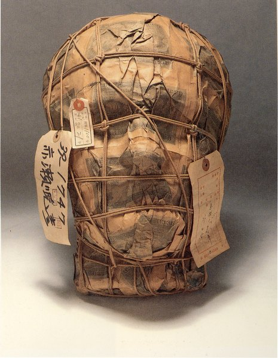
CRVI002650Genpei Akasegawa - Impound Object: Mask
1963
1963
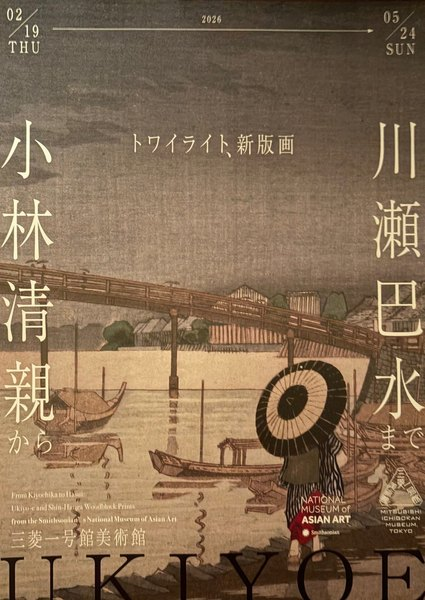
CRVI002659Unattributed - 小林清親から川瀬巴水まで トワイライト新版画 (From Kobayashi Kiyochika to Kawase Hasui)
2026
2026

CRVI001106Utagawa Kuniyoshi - Kurō Hōgan Yoshitsune at Horikawa (Chapter 31, Makibashira)
Woodblock print (nishiki-e), ōban · from Genji kumo ukiyo-e awase · Published by Iseya Ichibei · c. 1845–1846
Woodblock print (nishiki-e), ōban · from Genji kumo ukiyo-e awase · Published by Iseya Ichibei · c. 1845–1846

CRVI001105Utagawa Kuniyoshi - Hakumenrōkun Teitenju, from The 108 Heroes of the Popular Suikoden
Woodblock print (nishiki-e), ōban · Tsūzoku Suikoden gōketsu hyakuhachinin no hitori · Published by Kaga-ya Kichiemon · c. 1827–1830
Woodblock print (nishiki-e), ōban · Tsūzoku Suikoden gōketsu hyakuhachinin no hitori · Published by Kaga-ya Kichiemon · c. 1827–1830

CRVI001774Unidentified - Figure with rope coils and hose
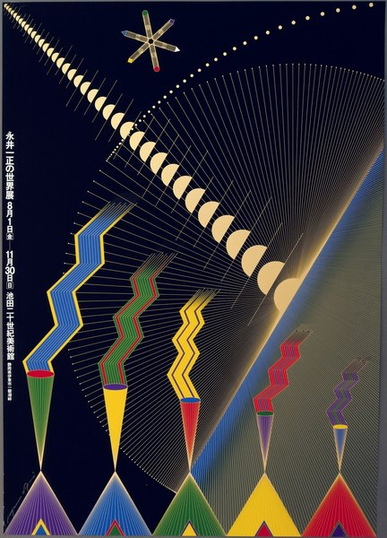
CRVI002675Kazumasa Nagai - 永井一正の世界展 (The World of Kazumasa Nagai)

CRVI001788Unidentified - Sprayed composition

CRVI000128Koichi Sato - The 6th Iwaki Prefecture Art Festival
1982
1982

CRVI002175Yasumasa Morimura - Self-portrait as a bride
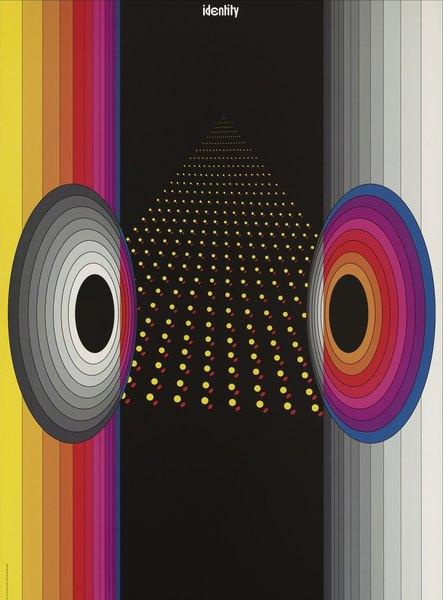
CRVI002674Kazumasa Nagai - Identity
1976
1976

CRVI000161Kazumasa Nagai - Peace
Designed by Kazumasa Nagai · 1989
Designed by Kazumasa Nagai · 1989

CRVI002680Kazumasa Nagai - Untitled (monkey), from the LIFE series
1991
1991
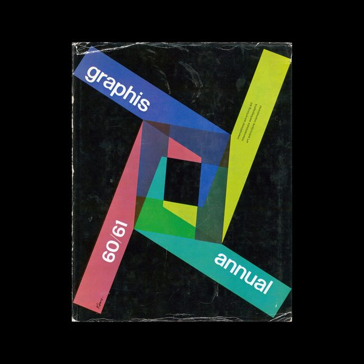
CRVI002827Yusaku Kamekura - Graphis Annual 60/61
1960
1960

CRVI000289Ikko Tanaka - Faces
Poster
Poster

CRVI000306Haruomi Hosono - Philharmony
Designer unknown · Yen · 1982
Designer unknown · Yen · 1982
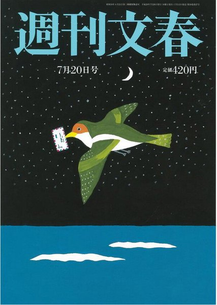
CRVI002705Makoto Wada - 週刊文春 (Shūkan Bunshun) cover

CRVI000218Yayoi Kusama - Kusama painting, Tokyo
Photograph by Motohiko Hasui · at the media preview of the Yayoi Kusama Museum · 2017
Photograph by Motohiko Hasui · at the media preview of the Yayoi Kusama Museum · 2017

CRVI002251Claes Oldenburg and Coosje van Bruggen - Saw, Sawing
1996
1996
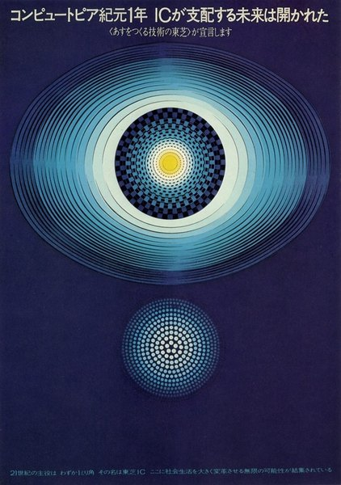
CRVI002676Unattributed - コンピュートピア紀元1年 (Computopia, Year One)

CRVI002709Mitsuo Katsui - I'm here (AIR)
1993
1993

CRVI002678Kazumasa Nagai - 京都市交響楽団演奏会 (Kyoto City Symphony Orchestra concert)

CRVI001052Takenobu Igarashi - Untitled poster
Poster · The Museum of Modern Art, New York
Poster · The Museum of Modern Art, New York

CRVI000224SOIL & "PIMP" SESSIONS - Pimp Of The Year
Designer unknown · Victor · 2006
Designer unknown · Victor · 2006
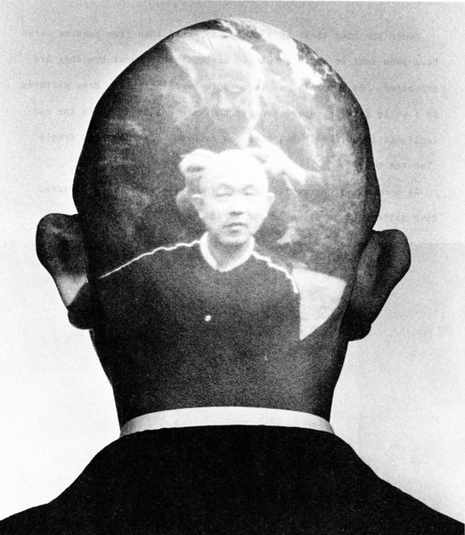
CRVI001781Shōzō Shimamoto - Mail Art is a supranational peace movement

CRVI000157Kazumasa Nagai - Exhibition of Graphic Art
Designed by Kazumasa Nagai · 1978
Designed by Kazumasa Nagai · 1978

CRVI001050Takenobu Igarashi - Takenobu Igarashi Exhibition 2
Poster · The Museum of Modern Art, New York
Poster · The Museum of Modern Art, New York

CRVI000755Tetsuya Ishida - Untitled
1998 · 1998
1998 · 1998

CRVI000759Tetsuya Ishida - Rooftop Refugee
Acrylic on board · 145.8 × 103.3 cm · 1996
Acrylic on board · 145.8 × 103.3 cm · 1996

CRVI000222Yayoi Kusama - Kusama with her stuffed fabric works
Photograph by Evelyn Hofer · among the sewn phalluses of her room-filling installations · 1964
Photograph by Evelyn Hofer · among the sewn phalluses of her room-filling installations · 1964

CRVI001950Yayoi Kusama - Kusama in a Foreign Country
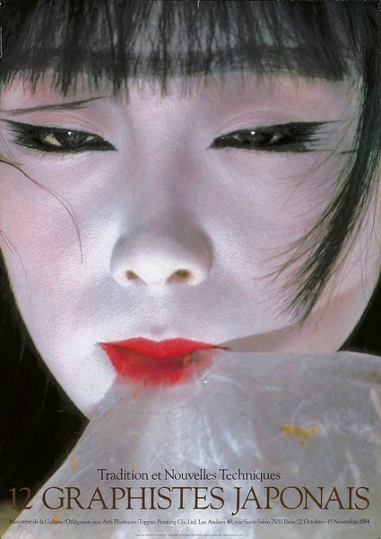
CRVI002689Noriaki Yokosuka - 12 Graphistes Japonais: Tradition et Nouvelles Techniques
1984
1984

CRVI001776Kazuo Shiraga - Funsyutu
1997
1997
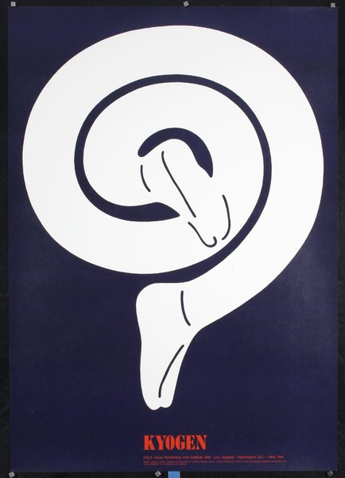
CRVI002683Shigeo Fukuda - Kyogen
1981
1981

CRVI000134Shigeo Fukuda - Shigeo Fukuda
Exhibition, Keio Department Store SF Art Gallery, 23–28 May 1975 · 1975
Exhibition, Keio Department Store SF Art Gallery, 23–28 May 1975 · 1975

CRVI000163Kazumasa Nagai - World Design Expo '89 - Nagoya
Designed by Kazumasa Nagai · 1989
Designed by Kazumasa Nagai · 1989
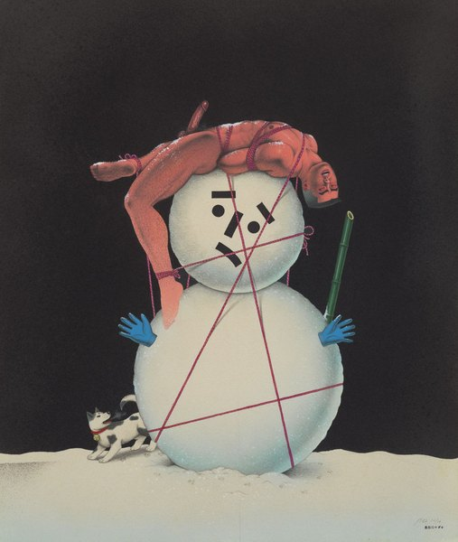
CRVI003061Sadao Hasegawa - untitled

CRVI000751Tetsuya Ishida - Exercise Equipment
Acrylic on board · 103 × 145.6 cm · 1997
Acrylic on board · 103 × 145.6 cm · 1997

CRVI000752Tetsuya Ishida - Awakening
1998 · 1998
1998 · 1998

CRVI000750Tetsuya Ishida - Supermarket
Acrylic on board · 103 × 145.6 cm · 1996
Acrylic on board · 103 × 145.6 cm · 1996

CRVI000753Tetsuya Ishida - Refuel Meal
1996 · 1996
1996 · 1996
CRVI002719Eiko Ishioka - Untitled (five heads)
CRVI001779Unidentified - Saburō Murakami passing through paper screens, 2nd Gutai Exhibition, Tokyo
1956
1956

CRVI000757Tetsuya Ishida - Gripe
Acrylic on canvas mounted on board · 42.2 × 59.4 cm · 1997
Acrylic on canvas mounted on board · 42.2 × 59.4 cm · 1997

CRVI001778Unidentified - Black and yellow impasto composition
CRVI002693Kenji Itoh - 海抜1000mの涼風 ナショナル ルームクーラー (Cool Breeze at 1,000 Metres)
1965
1965

CRVI000758Tetsuya Ishida - Hothouse
Onshitsu · acrylic and oil on canvas · 72.6 × 90.9 cm · 2003
Onshitsu · acrylic and oil on canvas · 72.6 × 90.9 cm · 2003

CRVI000113Kiyoshi Awazu - La Chinoise
Japanese poster for the first Japanese release of Godard's film · Athos · 1967
Japanese poster for the first Japanese release of Godard's film · Athos · 1967

CRVI000114Yusaku Kamekura - Tokyo 1964 — Butterfly Swimmer
Official poster, Games of the XVIII Olympiad · photograph Osamu Hayasaki · photo direction Jo Murakoshi · 1964
Official poster, Games of the XVIII Olympiad · photograph Osamu Hayasaki · photo direction Jo Murakoshi · 1964

CRVI000115Yusaku Kamekura - Tokyo 1964 — Starting Line
Official poster, Games of the XVIII Olympiad · photograph Osamu Hayasaki · 1964
Official poster, Games of the XVIII Olympiad · photograph Osamu Hayasaki · 1964

CRVI000162Kazumasa Nagai - The World of Kazumasa Nagai - Ikeda Museum of the 20th Century Art
Designed by Kazumasa Nagai · 1980
Designed by Kazumasa Nagai · 1980

CRVI000160Kazumasa Nagai - Kazumasa Nagai Exhibition - Design Gallery
Designed by Kazumasa Nagai · 1991
Designed by Kazumasa Nagai · 1991
CRVI002710Mitsuo Katsui - Hayashi, UCLA Asian Performing Arts Institute
1981
1981

CRVI002677Unattributed - 日仏現代ポスター交流展 (Japan–France Contemporary Poster Exchange)
1986
1986

CRVI000159Kazumasa Nagai - JIDA 30th Anniversary Program
Designed by Kazumasa Nagai · 1982
Designed by Kazumasa Nagai · 1982
CRVI002180Yasumasa Morimura - Self-portrait after Velázquez

CRVI000219Yayoi Kusama - Longing for Eternity
Photograph by Vincent Tullo · shown in 'Festival of Life', David Zwirner Gallery · 2017
Photograph by Vincent Tullo · shown in 'Festival of Life', David Zwirner Gallery · 2017

CRVI000125Yusaku Kamekura - Expo '70
Japan World Exposition, Osaka · 'Progress and Harmony for Mankind' · 1970
Japan World Exposition, Osaka · 'Progress and Harmony for Mankind' · 1970
CRVI002176Yasumasa Morimura - Self-portrait after Vermeer